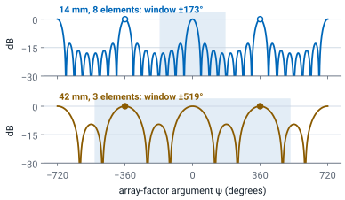
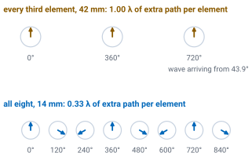
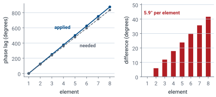
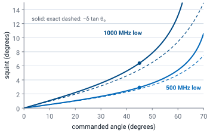
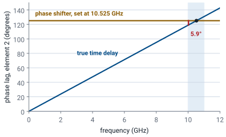
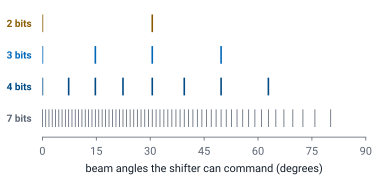
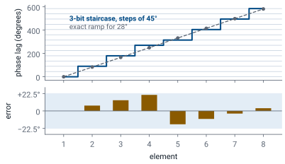
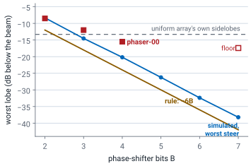
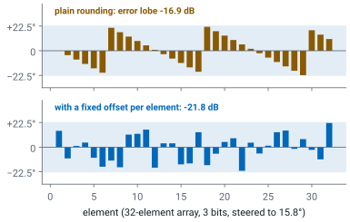
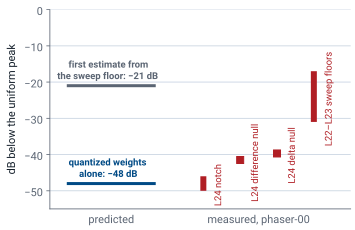

L23 - Beam Squint and Quantization#
Beam Squint and Quantization
Grating lobes, beam squint, and phase quantization, each with a number to design against.
Lesson 23 · Antennas, Phased Arrays, and Radar Systems · Dr. Neil Rogers
Printing
To print the slides, switch to present mode and print: one slide a sheet, with room for notes. Print from read mode for the whole lesson.
Learning Objectives
- I can identify grating lobes, beam squint, and quantization effects in a phased array and describe their impact on system performance.
In Lesson 22 we controlled the sidelobes with amplitude weights. Three things can still put energy where we did not ask for it, and a taper fixes none of them: the element spacing, the signal bandwidth, and the finite resolution of the phase shifters. Each one produces a specific, predictable defect — a second full-height beam, a beam that moves with frequency, and a floor of sidelobes you cannot get below. This lesson gives you the number for each. The L22–L23 Lab then measures all three on your own kit, against the numbers this lesson derives, after its Part 1 has measured Lesson 22’s tapers.
The Array Factor Repeats Every 2π
Shift \(\psi\) by \(2\pi\) and \(\vert AF_N \vert\) is unchanged.
Real angles reach a \(2kd\)-wide window, visible space; a repeat inside it is a grating lobe.

Lesson 16 showed that the array factor repeats, and that a repeat reaching visible space is a grating lobe as tall as the main beam. This lesson turns that result into a design rule. Every array pattern in this module has been a function of one variable, Lesson 16’s inter-element phase with Lesson 18’s steering ramp subtracted,
and the uniform array factor built on it,
Replace \(\psi\) by \(\psi + 2\pi\) and both sines flip sign together, so \(\vert AF_N \vert\) is unchanged. The array factor is periodic in \(\psi\) with period \(2\pi\). The main lobe is the peak at \(\psi = 0\), and the same peak reappears at \(\psi = \pm 2\pi, \pm 4\pi, \ldots\) — every one of them a full-height beam.
Whether we ever see those repeats depends on how much of the \(\psi\) axis the real angles \(-90^\circ \le \theta \le +90^\circ\) reach. We call that span visible space, and the spacing sets its width: as \(\sin\theta\) runs from −1 to +1, \(\psi\) runs over a window of total width \(2kd = 4\pi d/\lambda\). Widening \(d\) brings more periods of the array factor into visible space. A repeat that lands inside visible space is a grating lobe. The figure draws both cases on the same axis: at 14 mm the window stops at ±173°, short of the repeats at ±360°, and at 42 mm it reaches ±519° and takes in both.
The Grating Condition
\(m\) is any positive integer.
Any solution with \(\vert\sin\theta_g\vert \le 1\) is a real beam.
At \(\theta_g\) every element is back in phase. A grating lobe is a second main beam, full height, and no taper lowers it.
Set \(\psi = 2\pi m\) and solve:
for integer \(m = 1, 2, \ldots\) Any solution with \(\vert \sin\theta_g \vert \le 1\) is a real angle, and the array radiates a second beam there. The thinning example’s figure shows why from the elements’ side: at 43.9° the fed elements of the 42 mm row sit exactly one wavelength of path apart, so their phases read 0°, 360° and 720° and add exactly as they do at broadside.
A grating lobe is not a sidelobe. At \(\theta_g\) every element is back in phase — one full wavelength of path difference per element instead of zero — so the grating lobe is exactly as tall as the main lobe. Tapering does not reduce it, because the taper controls the sidelobe skirts of one beam and this is a second beam. Full height is an array-factor statement: Lesson 21’s element factor scales the lobe by \(EF(\theta_g)\), which the \(\cos\theta\) model puts 1.4 dB down at ±43°. The phaser-00 test run still read the lobes at full height.
Worked Example: Thinning the PHASER Row
Feed every third patch: \(d = 42\) mm, \(\lambda/d = 0.693\) at 10.3 GHz.
Grating lobes at ±43.9°: three full-height beams.
Every fourth patch: \(d = 56\) mm, lobes at ±31.3°.
A wide aperture with few elements gives a narrow but ambiguous beam.

Worked example — thinning the PHASER row
The PHASER array is 8 patches on a \(d = 14\ \text{mm}\) pitch. Feed only every third element and the fed elements sit 42 mm apart. At the array’s design center of 10.3 GHz, \(\lambda = 29.1\ \text{mm}\), so \(\lambda/d = 29.1/42 = 0.693\).
At broadside (\(\theta_0 = 0\)), the \(m = 1\) solutions are
The \(m = 2\) solutions need \(\vert \sin\theta_g \vert = 1.386\), which is not a real angle, so there are exactly three full-height beams: 0° and ±44°. In the L22–L23 Lab, repeat the arithmetic at your own kit’s Find HB100 frequency. On phaser-00, one of the course kits, a test run of the lab at 10.443 GHz predicts ±43.1° and measured −43.6° and +42.3°.
Feed every fourth element instead (56 mm, \(\lambda/d = 0.520\)) and the pair moves in to ±31.3° (±30.8° at 10.443 GHz, where phaser-00 measured −33.0° and +29.8°), with the \(m = 2\) repeat just past the horizon, at \(\sin\theta = \pm 1.04\) — the pattern comes back to within a fraction of a dB of full height at ±90°.
Thinning has two effects. The three fed elements still span an 84 mm aperture, so the main beam stays narrow, but with three elements instead of eight the array collects less signal and the pattern between the beams is poorly controlled. Each fed element adds the same voltage at the peak, so the peak falls by the fraction of elements fed, every third element and then every fourth:
The phaser-00 test run measured −7.8 and −10.9 dB, about 1 dB short of both. The same shortfall appears when the full array is compared with its single elements, and its cause is still open. The narrow beam of a large aperture with the ambiguity of a sparse one is the classic thinned-array trade.
Keeping Grating Lobes Out
Scan to ±45°: \(d < 0.586\lambda\). To ±60°: \(d < 0.536\lambda\).
Any angle: \(d < \lambda/2\), the default in every scanning array.

We want no grating lobe anywhere in visible space, for every angle we intend to scan to. The dangerous solution is the one closest to the horizon on the far side of the beam. For a beam steered to positive \(\theta_0\), that is \(m = 1\) with the minus sign, and pushing it past the horizon requires
The wider we intend to scan, the closer together the elements must be. Broadside operation tolerates \(d < \lambda\). Scanning to ±45° demands \(d < 0.586\lambda\), and ±60° demands \(d < 0.536\lambda\). Take the criterion to its limit, \(\theta_0 \to 90^\circ\), and you get \(d < \lambda/2\) — which is why half-wavelength spacing is the default in every scanning array. It is grating-lobe-free at any scan angle we can command. The figure, from Lesson 16, draws the criterion as a boundary: any spacing and scan angle below the curve is free of grating lobes, and the PHASER’s \(0.481\lambda\) sits below it everywhere.
Note
Grating lobes are not always a defect. Interferometers and sparse radio-astronomy arrays use them on purpose, resolving fine detail with a small number of widely spaced elements and removing the ambiguity by other means. A designer can choose grating lobes; they should never be found after the array is built.
The PHASER Has No Grating Lobe
Worst case is the shortest \(\lambda\): 10.5 GHz, \(\lambda/d = 28.6/14 = 2.04\).
Needs \(\vert\sin\theta_0\vert < 1.04\): every real angle passes.
The 14 mm pitch is \(0.49\lambda\), just inside the half-wavelength rule.
Worked example — is the PHASER safe?
Use the highest frequency the array is specified for, 10.5 GHz, because \(\lambda\) is shortest there and the criterion is tightest: \(\lambda = 28.6\ \text{mm}\), so \(\lambda/d = 28.6/14 = 2.04\).
The criterion requires \(1 + \vert\sin\theta_0\vert < \lambda/d = 2.04\), or \(\vert\sin\theta_0\vert < 1.04\). Every real angle satisfies that, so the array has no grating lobe at any scan angle in its band. The 14 mm pitch is \(0.49\lambda\) at the band edge, chosen to sit just inside the half-wavelength rule.
Phase Is Set at One Frequency
The phase ramp is computed once, at \(f_0\).
A signal at another frequency adds in phase at another angle.

The beam-steering computer sets each phase shifter once, in degrees. The angle that setting steers to is not fixed, because the phase a given path length produces depends on frequency. The figure shows the result across the aperture for the worked example below: the shifters apply 125.1° per element, set for 45° at 10.525 GHz, and a 10.025 GHz signal needs 119.2° per element to add in phase at 45°. The difference, 5.9° per element, is itself a straight ramp, and a straight ramp is a steer: the beam moves to a new angle and stays intact. Lesson 18 named the result, beam squint, and the L18 Lab showed it once on the kit; here we compute it.
Suppose the beam-steering computer sets element \(n\) to a lag of \(n\ k_0 d \sin\theta_0\), computed at the design frequency \(f_0\) where \(k_0 = 2\pi/\lambda_0\). Now a signal arrives at some other frequency \(f\) in the band. The elements add in phase toward whatever angle \(\theta\) makes the arrival phase cancel the applied lag:
The Squint Formula
No \(N\), no \(d\): only \(f_0/f\) survives.
Zero at broadside, fastest at wide scan.
so the beam points at
away from the commanded angle.
This is beam squint. It does not depend on \(N\) or on \(d\) — the phase ramp and the path lengths scale together, and only the ratio \(f_0/f\) survives. It vanishes at broadside, where the ramp is zero and there is nothing to scale. For small fractional offsets \(\delta = (f - f_0)/f_0\), expanding the arcsine gives the small-offset form:
The beam moves toward the horizon as the frequency drops, and it moves fastest when the beam is already far off broadside.

The figure plots both forms for signals 500 and 1000 MHz below 10.525 GHz. Squint is under a degree near broadside, 2.9° and 6.4° at 45°, and 5.4° and 13.1° at 60°. The small-offset form tracks the exact one at small angles and falls short at wide scan, by 3.7° at 60° for the 1000 MHz offset, so a budget at wide scan should use the exact form.
Worked Example: Squint on the PHASER
Phases set for 45° at 10.525 GHz; the signal arrives 500 MHz lower.
The beam lands at 47.9°: +2.9° of squint, 0.25 dB lost at the aimpoint.
1 GHz off: 6.4°, a third of a beam, 1.0 dB.
Worked example — squint on the PHASER
Phases are set for \(\theta_0 = 45^\circ\) at the HB100’s \(f_0 = 10.525\ \text{GHz}\). A signal arrives 500 MHz lower, at 10.025 GHz:
The beam has squinted \(\Delta\theta = +2.9^\circ\). The small-offset form, with \(\delta = -0.0475\) and \(\tan 45^\circ = 1\), gives
close enough for a budget. This is the +3° your Angle readout will move in the L22–L23 Lab when the Signal BW goes from 10 to 500 MHz: the GUI sets the phases 500 MHz below the signal, so the sweep has to command 47.9° to land on a source at 45°. The phaser-00 test run agreed: with the source at 41.1°, the prediction is +2.6° and phaser-00 measured +2.5°.
At 45° the beam is 18.7° wide (Lesson 20’s \(13.2^\circ/\cos 45^\circ\)), so 2.9° of squint loses only 0.25 dB at the aimpoint. That loss is the array factor evaluated at the aimpoint, which now sits off the beam’s peak. At 10.025 GHz, \(kd = 2.94\) rad, and the aimpoint’s \(\sin\theta\) sits \(\sin 45^\circ - \sin 47.9^\circ = -0.0353\) from the peak’s:
At a 1 GHz offset the squint reaches 6.4°, roughly a third of a beamwidth, and the loss grows to 1.0 dB.
Why Squint Matters
Wideband radar: each frequency in the pulse points somewhere else, so the beam smears and depoints.
Communications: gain falls at the band edges, a tilt across the channel.
Squint affects two kinds of system differently. A wideband radar transmits a pulse whose spectrum is the bandwidth; each frequency component in that pulse points somewhere slightly different, so the pulse’s energy is spread in angle and the effective beam is broadened and depointed. A communications link running a modulated carrier loses gain at the band edges relative to the center, which shows up as amplitude tilt across the channel rather than as an angle error.
True Time Delay
A delay matches a path length at every frequency: no squint.
Delay is costly, so large arrays delay per subarray and phase-shift inside each one.

The cure is to stop steering with phase. If instead of a phase lag you insert a true time delay of \(\tau_n = n\ d \sin\theta_0 / c\) in each element, the delay compensates the geometric path difference itself, which is a length and not a phase. Every frequency in the band then arrives in phase at the same angle, and the squint is gone at all offsets. True time delay is expensive in analog hardware, which is why large wideband arrays usually compromise: time delay at the level of the subarray (a group of elements combined before the rest, as on the PHASER’s two four-element halves in Lesson 17) to control the squint across the aperture, phase shifters inside each subarray where the residual path differences are small. The figure shows why for one element of a 45° steer: a 33.0 ps delay produces a phase that grows in step with frequency, while a phase shifter holds its 125.1° at every frequency, so the two agree only at 10.525 GHz and differ by 5.9° at 10.025 GHz.
Phase Quantization
ADAR1000: \(B = 7\), 128 states, LSB \(= 2.8125^\circ\).
Rounding to that grid coarsens the pointing and adds sidelobes.
The ADAR1000 does not accept an arbitrary phase. It has a \(B\)-bit phase shifter, and \(B\) bits divide the circle into \(2^B\) steps. The smallest step, one least significant bit (LSB), is the grid Lesson 18 rounded its 30° phase table onto:
The ADAR1000 uses \(B = 7\), giving 128 states and an LSB of 2.8125°. The ADAR1000 rounds every commanded phase to that grid, which has two consequences.
Pointing Granularity
PHASER: 0.91° at broadside, one-fourteenth of a beam.
Grows as \(1/\cos\theta_0\): 1.8° at 60°.
2 bits: 29° steps, so broadside and about ±31° only.
The inter-element phase for a beam at \(\theta_0\) is \(\Delta\phi = 360^\circ (d/\lambda) \sin\theta_0\). If the controller can only command multiples of the LSB, only a discrete set of beam angles exists:
so the step near broadside is
For the PHASER at 10.525 GHz, \(d/\lambda = 0.491\), so the step is \(2.8125/(360 \times 0.491) = 0.0159\ \text{rad} = 0.91^\circ\) at broadside. Compared with the 13.2° beamwidth that is about one-fourteenth of a beam, which is fine. Off broadside the same step in \(\sin\theta_0\) spans a wider angle, because \(\Delta(\sin\theta_0) = \cos\theta_0\ \Delta\theta_0\). The step therefore grows as \(1/\cos\theta_0\), reaching 1.8° at 60°. Drop to \(B = 2\) and the same calculation gives 29° per step: a 2-bit array can only point at broadside and at about ±31°.

The figure shows the angles each bit count can reach on the course array. With 3 bits they are 0°, 14.7°, 30.6° and 49.7°, equally spaced in \(\sin\theta_0\) and so spreading apart in angle as the scan widens. A real controller rounds each element on its own, which fills in the angles between these and brings in the quantization lobes below.
Quantization Sidelobes
Rounding leaves a periodic sawtooth phase error, and it radiates a lobe.
Rule: 2 bits −12 dB, 3 bits −18, 4 bits −24.
Phaser-00 measured −8.5, −12.0, and −15.5 dBc: above the rule.

A real controller does better than a uniform quantized increment. It computes the exact ramp for every element, then rounds each element independently, which puts the beam much closer to the commanded angle. What is left behind is a staircase: the difference between the exact ramp and the rounded one is a sawtooth error, bounded by half an LSB, that repeats across the aperture. A periodic phase error radiates, and where it radiates is a quantization sidelobe. The figure shows the staircase for a beam at 28° with 3 bits: the exact ramp climbs 83.1° per element, the shifters can only set multiples of 45°, and the error left at each element rises and falls within ±22.5°.
Its level follows from the size of the error. Rounding leaves at most half an LSB at each element. For a small phase error \(e^{j\phi} \approx 1 + j\phi\), so the error adds a small field to each element in proportion to \(\phi\), and the lobe that field radiates scales with the sawtooth’s peak:
Each extra bit halves the error, which halves the lobe’s field and lowers the quantization sidelobe level (QSLL) by 6 dB. That gives the rule of thumb, so 2 bits puts a lobe near −12 dB, 3 bits near −18 dB, and the ADAR1000’s 7 bits near −42 dB. Treat this as an RMS estimate for a large array. On an aperture as short as eight elements there are only a couple of sawtooth periods, so individual lobes scatter several dB either side of the rule. Taken at face value, the rule says that from 3 bits up the quantization lobes drop below the array’s own −13 dB sidelobes and no longer set the sidelobe level.
The hardware disagrees. In the phaser-00 test run, with the source fixed, the kit read the strongest lobe beyond ±35° at −8.5 dBc with 2 bits, −12.0 dBc with 3, −15.5 dBc with 4, and −17.4 dBc, the floor of that sweep, with 7. Every reading sits above the rule, by 3.5 dB at 2 bits and by 6 to 8.5 dB at 3 and 4 bits, so on this kit 3 bits is not enough to hide the quantization lobes under the −13 dB sidelobes. The Angle readout moved too: it read +8.4° at 4, 3, and 2 bits against +1.8° at 7, several times the pointing step derived above. The cause of the extra error has not been confirmed. At low bit counts, read the lobe levels on the sweep rather than the Angle readout.

The figure adds a third curve: the worst quantization lobe the course array can produce at any steer angle up to 50°, computed from the field the rounding error radiates on its own. It sits about 4 dB above the rule at every bit count, because the rule is an average for a large array and eight elements leave room for a worst case. That accounts for the 2-bit reading, −8.3 dB simulated against −8.5 dBc measured. The 3- and 4-bit readings still sit 2.5 and 4.7 dB above even the worst case, so rounding the steering ramp does not explain them by itself.
More bits improve two things: finer pointing, which scales as the LSB, and a lower sidelobe floor, which scales as 6 dB per bit. Seven bits is the standard choice because it puts the quantization floor far below every other error in the array.
Dither
The same sawtooth on every beam position radiates coherently into one lobe.
A small known offset per element before rounding breaks the period.
The same error spreads over many angles: a lower peak lobe, no new hardware.
Dither lowers the peak quantization lobe without new hardware. If the rounding error is the same sawtooth on every beam position, it radiates coherently into one lobe. Adding a small known phase offset per element before rounding breaks the periodicity, which spreads the same total error energy over many angles instead of concentrating it in one.

The effect needs a longer aperture than eight elements to see, so the figure uses 32. With plain rounding the error drifts about 4° per element and repeats as a sawtooth, and the field it radiates peaks at −16.9 dB. With a fixed, known offset built into each element and the command rounded around it, the error stays within the same ±22.5° but no longer repeats, and for a typical set of offsets its peak falls to −21.8 dB.
Null Depth: Predicted and Measured
One-step channel errors still allow a −48 dB null.
Our sweep-floor estimate capped measured nulls near 21 dB.
Phaser-00 measured −40 to −50 dB nulls in L24, but sweep floors from −17 to −31 dBc.

One thing quantization does not set is how deep a null can go. It is tempting to assume that a cancellation is only as good as the phase resolution behind it, but the LSB does not limit the null weights: rounding them to a 2.8125° grid with 1% gain steps leaves the pattern 56 dB down at the angle it was designed for, and the pattern still passes through zero a quarter of a degree away, at +22.3°. Rounding moves the notch; it does not fill it. Even independent errors of one step in every channel, which Lesson 24 works through, still allow a null about 48 dB down.
Our first estimate of the measured limit came from the receiver. Earlier sweeps on the PHASER showed a noise floor about 23 dB below the uniform-taper peak, and the weights that create a null reduce the main-lobe gain by about 2 dB, so we expected a sweep to show nothing deeper than about 21 dB below the new peak.
The phaser-00 test run did not bear that out. In the L24 Lab the notch reached −46 to −50 dB below the uniform peak, the difference null −41.5 dB, and the delta null −39.7 dBc. The deepest of these sits close to the −48 dB that one-step channel errors allow, so on that kit the sweep followed the pattern most of the way down. The same session’s L22–L23 Lab sweeps, however, read floors between −17 and −31 dBc, and a wall or a person beside the kit raised lobes as high as −9 dBc. The floor a sweep shows is therefore not one fixed number: it changed from lab to lab on the same kit, and the bench around the kit changed it further.
Separate the two limits. Quantization sets a sidelobe floor at roughly \(-6B\) dB and a pointing granularity of about one LSB, and on the course array one-step channel errors still allow a −48 dB null. The floor of the measurement sets what you can observe. We predicted that floor would cap a measured null near 21 dB; on phaser-00 the L24 nulls reached −40 to −50 dB, while the L22–L23 sweeps on the same kit read floors from −17 to −31 dBc. A shallow measured null points to the bench first, not to the phase shifter.
Three Departures on the Course Array
The widget’s left panel is the pattern; its right panel shows why the pattern looks that way. At the two angles marked 1 and 2 on the pattern, it adds the eight element contributions head to tail, the same sum Lesson 22 drew for the first sidelobe, and the chain’s length is the level at that angle. Start in Grating at 14 mm: the chain at the sidelobe curls almost shut. Step to 42 mm and the chain at 43.9° comes out straight, because each fed element is a whole turn behind its neighbor. Switch to Squint and drag the offset: the chain at the commanded 45° bends into an arc, while the chain at the new peak is straight, so the beam has moved rather than broken. Switch to Quantization, set 3 bits, and move the steer angle: at 15° the ramp lands almost exactly on the 45° grid and nothing changes, while at 28° the rounding error lines the chain up partway and a lobe rises to −9 dB. Whether rounding matters depends on how the ramp falls on the grid, not only on the number of bits.
Three Departures, Three Cures
Departure |
Set by |
Cure |
|---|---|---|
Grating lobe |
\(\lambda/d\) |
\(d \le \lambda/2\) |
Beam squint |
\(\delta\ \tan\theta_0\) |
True time delay |
Pointing step |
the LSB |
More bits |
Quantization lobe |
\(-6B\) dB |
More bits, dither |
The three failures look different on a sweep and a designer fixes each one in a different place.
Phenomenon |
Cause |
Predict it with |
Design cure |
|---|---|---|---|
Grating lobe |
Element spacing too wide for the scan range |
\(\sin\theta_g = \sin\theta_0 \pm m\lambda/d\) |
Keep \(d < \lambda/(1+\vert\sin\theta_0\vert)\); \(d \le \lambda/2\) is safe everywhere |
Thinned-array ambiguity |
Feeding a subset of a filled aperture |
Same criterion, using the effective spacing |
Fill the aperture, or accept and resolve the ambiguity |
Beam squint |
One phase setting used across a band |
\(\Delta\theta = \arcsin((f_0/f)\sin\theta_0) - \theta_0\) |
True time delay, at the element or the subarray |
Pointing granularity |
Finite phase steps in the beam-steering command |
\(\Delta\theta_0 \approx \text{LSB}/(360^\circ d/\lambda)\) |
More bits |
Quantization sidelobes |
Staircase error left after rounding the ramp |
\(\text{QSLL} \approx -6B\) dB |
More bits, or dither the rounding across elements |
Summary: Grating Lobes
Symbol / idea |
What it is |
Number to remember |
|---|---|---|
\(\sin\theta_g = \sin\theta_0 \pm m\lambda/d\) |
Grating-lobe angles, from the \(2\pi\) periodicity of the array factor |
42 mm at 10.3 GHz gives ±43.9°; 56 mm gives ±31.3° |
\(d < \lambda/(1+\vert\sin\theta_0\vert)\) |
Spacing that keeps grating lobes out of visible space |
\(d \le \lambda/2\) is safe at every scan angle |
Grating-lobe height |
It is a second main lobe, not a sidelobe |
Equal to the main beam; a taper does not reduce it |
Summary: Beam Squint
Symbol / idea |
What it is |
Number to remember |
|---|---|---|
\(\Delta\theta = \arcsin((f_0/f)\sin\theta_0) - \theta_0\) |
Beam squint when the signal is off the phase-set frequency |
500 MHz at 45° gives +2.9° |
\(\Delta\theta \approx -(\Delta f/f_0)\tan\theta_0\) |
Small-offset squint, for a budget |
Zero at broadside, worst at wide scan |
True time delay |
Delays the signal instead of rotating its phase |
Removes squint at all offsets |
Summary: Quantization
Symbol / idea |
What it is |
Number to remember |
|---|---|---|
\(\text{LSB} = 360^\circ/2^B\) |
Phase step of a \(B\)-bit shifter |
ADAR1000: \(B = 7\), LSB \(= 2.8125^\circ\) |
\(\Delta\theta_0 \approx \text{LSB}/(360^\circ d/\lambda)\) |
Pointing granularity near broadside |
0.91° on the PHASER, one-fourteenth of a beam |
\(\text{QSLL} \approx -6B\) dB |
Quantization sidelobe rule of thumb |
2 bits gives −12 dB; 7 bits gives −42 dB; phaser-00 read −8.5 dBc at 2 bits and −12.0 at 3 |
Practice
Looking Ahead
The L22–L23 Lab measures all three departures on your own kit.
L24 places a null: quantization nudges it; phaser-00 measured −40 to −50 dB.
Bring the LSB of a \(B\)-bit shifter, its pointing step, and the weights \(w_n\).
Part 2 of the L22–L23 Lab measures all three of today’s departures on your own kit. Lesson 24 then extends pattern control from the whole beam to one chosen angle. So far you have shaped the beam and the sidelobes as a whole; next you will place a null at a chosen angle on purpose, which is what an array does when a jammer or an interfering transmitter sits somewhere you know about. The weights come from subtracting one steering vector from another, and the arithmetic is short.
Both of today’s floors appear again in L24. Quantization moves the notch slightly off its commanded angle without filling it, and the floor of the sweep decides how much of the notch you can see. We predicted a measured depth near 21 dB; phaser-00 reached −40 to −50 dB, so in the L24 Lab compare your own notch against both numbers. Before Lesson 24, be able to state the LSB of a \(B\)-bit shifter and the pointing step it implies on the course array, and review the complex element weights \(w_n\) from Lesson 22 — the null-steering result is written entirely in that notation.